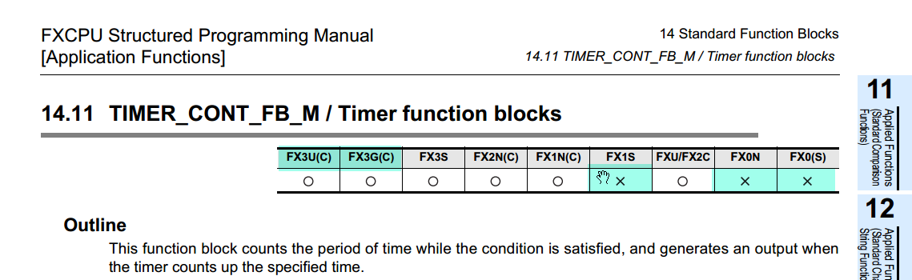

Обзор программируемых логических контроллеров (ПЛК) серии FX
В этом курсе мы сосредоточимся на ПЛК серий FX3G и FX3U только, хотя линейка FX включает и другие модели, такие как FX1N, FX2N и FX2U. Да и сама серия FX3 уже не последняя, и на смену ей пришла более современная FX5. Почему же мы выбираем именно FX3G и FX3U для изучения?
1️⃣ Причины выбора FX3G и FX3U
Основная причина — широкая доступность совместимых ПЛК. В какой-то момент прошивка ПЛК серий FX3G и FX3U стала общедоступной, что привело к появлению множества недорогих аналогов от китайских производителей. Эти совместимые ПЛК предлагают хорошее качество по доступной цене и выполняют задачи не хуже оригинальных контроллеров Mitsubishi. В отличие от FX3, для серии FX5 совместимых моделей нет, что ограничивает выбор только оригинальными устройствами, снижая гибкость для нас и наших клиентов.
Среди совместимых ПЛК модели FX3G и FX3U выделяются поддержкой наибольшего числа инструкций, что делает их оптимальным выбором для обучения и практического применения.
Контроллеры FX5 программируются в IDE GX Works 3. Это IDE следующего поколения. Если вы переживаете, что изучаете устаревшие технологии, и вы тратите время на то что через время станет не востребованным, должен вам сказать, хотя GX Works 3 и содержит новые возможности по сравнению с GX Works 2, их там не так много и движок ST там один и тот же. Изучив данный курс вы с легкостью сможете программировать оригинальные ПЛК Mitsubishi серии FX5* в GX Works 3.
2️⃣ Почему мы используем ПЛК L02 от Coolmay?
В курсе мы будем работать с ПЛК серии L02 от китайского производителя Coolmay. Хотя большинство материала применимо и к оригинальным ПЛК Mitsubishi, выбор L02 обусловлен следующими преимуществами:
-
Надежная поддержка ST-инструкций ПЛК L02 гарантирует полную поддержку языка ST. В отличие от некоторых безымянных совместимых ПЛК, где даже простые конструкции ST могут не работать, L02 обеспечивает стабильную работу всех инструкций.
Примечание:
Некоторые могут задаться вопросом, почему ST вызывает проблемы, ведь ST это просто возможность IDE в нашем случае GXW и на чем бы не была написана программа она компилируются в список инструкций. Проблема часто связана с конструкцией
IF, которая при компиляции генерирует точкиP. В некоторых ПЛК поддержка таких точек ограничена, что приводит к сбоям в ST, но не в LD (Ladder Diagram). Мы подробнее разберем это при обсуждении компиляции. -
Проверенная надежность За более чем три года работы с ПЛК L02 они зарекомендовали себя как надежные и стабильные устройства. Я уверенно использую и рекомендую их для различных проектов.
-
Доступная цена Стоимость L02 сопоставима с самыми бюджетными моделями, что делает их подходящими даже для проектов с ограниченным финансированием. При этом не нужно думать будто это дешевка, и что для хорошего проекта все равно нужно что то подороже, только потому что L02 это слишком дешево. Экономьте.
-
Активное сообщество Существует сообщество пользователей, программирующих ПЛК L02. В Telegram-группах можно быстро найти помощь и решить практически любую задачу в течение дня.
-
Удобный форм-фактор ПЛК L02 имеют продуманный дизайн с фронтальным подключением проводов, как у современных ПЛК от WAGO, Beckhoff и CREVIS. Это позволяет создавать компактные шкафы управления. Съемные клеммы упрощают замену модулей за считанные минуты.
-
Широкий набор интерфейсов L02 оснащены следующими интерфейсами:
- 1×RS232 (протокол Mitsubishi, режим Slave);
- 2×RS485 (протоколы Mitsubishi Slave, Modbus RTU Slave/Master, свободный протокол);
- 1×Ethernet (протоколы Modbus TCP, EthernetIP);
- 1×CAN (поддержка есть, но протоколы мне неизвестны).
Этого достаточно для построения промышленных сетей даже в сложных системах.
-
Встроенные аналоговые входы/выходы Головной модуль L02 может включать до 4 аналоговых входов и 4 выходов (по два 0–10 В и 4–20 мА). Это делает ПЛК подходящими для малой автоматизации, например, для станков или небольших установок.
-
Блок питания Это вроде мелочь, но есть блок питания, приставляется с лева, и обеспечивает питанием как ПЛК так и все модули. Удобно подключать, стоит не дорого. У него еще есть выход 24В которые можно использовать в коммутациях аналоговых входов, дискретных входов и выходов. Выглядит все в сборе моноблочно, красиво.
-
Модульная расширяемость В отличие от традиционных форм-факторов ПЛК FX3 (например, FX3G-24MR с 12 входами и 12 выходами) или (FX3G-60MТ с 30 входами и 30 выходами) которые имеют фиксированное количество IO, L02 предлагают гибкую модульную архитектуру. Доступны две базовые модели — L02M24T и L02M32T, которые можно расширить до 500 входов/выходов с помощью модулей, линейка которых достаточно широкая и покрывает все базовые потребности.
- Модуль 16 DI
- Модуль 16 DO (Транзистор или реле)
- Модуль 8 DO 8 DI (Транзистор или реле)
- Модуль 4 AI (0-10V, 4-20mA)
- Модуль 2 AO (0-10V, 4-20mA)
- Модель тензо-датчиков
- Модуль RTD (PT100, PT1000)
- Модуль ТС (K, J)
Также поддерживается подключение до 4 каплеров по EthernetIP, каждый из которых добавляет до 200 дополнительных входов/выходов.
Мне кажется L02 от Coolmay превосходит оригинальные ПЛК FX3G и FX3U по функциональности ну или как минимум по компактности. Эти контроллеры подходят не только для малой, но и для средней автоматизации, включая системы с более чем 1500 входов/выходов. Смело можно запустить небольшой цементный завод.
3️⃣ Ограничения ПЛК L02
- Ограничение размера программы Максимальный размер программы — 32 000 шагов. Этого обычно достаточно, но в некоторых проектах требуется оптимизация кода. Это ограничение заставило меня глубже изучить компиляцию и оптимизацию и писать компактные, но функциональные программы.
Мне пока что 32000 хватало, но для этого приходилось сильно оптимизировать код. 32000 это не мало, но и не так много что бы писать код небрежно.
- Ограничения редактора ST По сравнению с ПЛК на базе CoDeSys, редактор ST в L02 работает медленнее и имеет меньше возможностей. Например, нельзя создавать массивы функциональных блоков (FB) или использовать глобальные константы в функциях (FUN).
4️⃣ Различия между FX3G и FX3U
FX3U и FX3G это просто режимы, одного и того же ПЛК. То-есть аппаратно это одно и тоже устройство например L02M24T, просто его можно перевести в режим FX3G или FX3U. По умолчанию ПЛК L02 идет в режиме FX3G.
Как переключать режимы?
Для перевода ПЛК L02 в режим FX3U нужно присвоить регистру D8396 значение
2, и перегрузить ПЛК. Для того чтобы вернуть ПЛК в режим FX3G, регистру
D8396 присвоить значение 1, и перегрузить ПЛК.
Важно!
Прежде чем переключить L02 в режим FX3U, убедитесь что у вас есть шнур от Coolmay для порта RS232 на ПЛК, и на ПК есть COM порт или рабочий адаптер RS232.
☝🏻 Особенности режимов
Если мы будем ссылаться на документацию Mitsubishi то на каждой инструкции, вверху страницы справа у нас будет таблица, в каких ПЛК эта инструкция поддерживается.

На примере вы видите что инструкция TIMER_COUNT_FB_M не поддерживается в ПЛК
FX1S, FX0N и FX0S.
Разница FX3U и FX3G заключается в поддерживаемых инструкциях, указанных в документации Mitsubishi. FX3U поддерживает больше инструкций, особенно для контроля позиционирования, но для большинства задач возможностей FX3G достаточно включая тот же контроль позиционирования или другими словами работу с серво или шаговыми двигателями.
На моей практике, даже содовая программы для станков с серво приводами, мне не пришлось переключать ПЛК в режим FX3U.
-
FX3U:
- Поддерживает чуть больше инструкции контроля позиционирования.
- Поддерживает Ethernet для загрузки программ, но эта функция работает нестабильно.
- Поддержка Mitsubishi TCP Slave
- USB-порт Type-C не работает, загрузка программ возможна только через COM-порт с использованием кабеля DVP для ПЛК Delta (кабель FX для Mitsubishi не подходит).
-
FX3G: Ограничен по инструкциям, но более универсален для базовых задач. Скорей всего вам ни когда не понадобиться переключаться в режим FX3U.